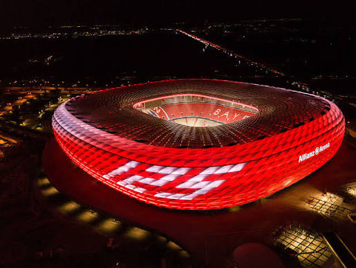
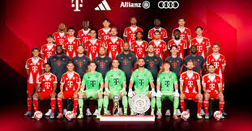

Founded
1900
Germany
Discover the history, stadium, legendary players, major trophies, records, and interesting facts about Bayern Munich.
Introduction
Bayern Munich is a professional soccer club based in Munich, Germany. Founded in 1900, Bayern has developed into the most successful club in German soccer and one of the most famous teams in Europe. The club is known for its red and white colors, championship tradition, famous players, and large worldwide fan base.
Bayern plays its home matches at the Allianz Arena in Munich. The stadium opened in 2005 and is famous for its unique exterior, which can be illuminated at night. The Allianz Arena has hosted major Bundesliga, Champions League, and international matches.
Bayern has built a reputation for consistently competing for championships. The club has dominated German soccer during several different periods while also achieving major success in European competition. Its long history of winning has made Bayern one of the most recognizable names in world soccer.
Many legendary players have represented Bayern, including Franz Beckenbauer, Gerd Müller, Sepp Maier, Karl-Heinz Rummenigge, Lothar Matthäus, Oliver Kahn, Philipp Lahm, Bastian Schweinsteiger, Thomas Müller, Manuel Neuer, Arjen Robben, Franck Ribéry, and Robert Lewandowski.

About the Club
Bayern Munich was founded on February 27, 1900, by Franz John and a group of other soccer players in Munich. The club gradually developed during the early decades of German soccer and won its first German national championship in 1932.
Bayern was not originally selected as a founding member of the Bundesliga when Germany's national professional league began in 1963. The club earned promotion to the Bundesliga in 1965 and soon developed one of the strongest teams in European soccer.
A legendary generation emerged around players such as Franz Beckenbauer, Gerd Müller, and Sepp Maier. These players helped Bayern win domestic championships and establish itself as a major European club during the 1960s and 1970s.
Bayern's greatest early European run came during the 1970s. The club won the European Cup three consecutive times in 1974, 1975, and 1976. Those victories placed Bayern among Europe's elite clubs and created a tradition of European success that continued for future generations.
Bayern continued to dominate German soccer throughout later decades. Stars such as Karl-Heinz Rummenigge, Lothar Matthäus, Stefan Effenberg, and Oliver Kahn became important figures as the club continued collecting Bundesliga titles and domestic cups.
One of Bayern's most dramatic European victories came in 2001. After losing the 1999 Champions League final to Manchester United in stoppage time, Bayern returned to the final two years later and defeated Valencia in a penalty shootout to become European champions.
Bayern reached another historic level during the 2012-13 season. The club won the Bundesliga, DFB-Pokal, and UEFA Champions League to complete the Treble. Bayern defeated fellow German club Borussia Dortmund in the Champions League final at Wembley Stadium.
The club achieved the Treble again during the 2019-20 season under manager Hansi Flick. Bayern won the Bundesliga, DFB-Pokal, and Champions League while producing several dominant performances in Europe. Bayern defeated Paris Saint-Germain in the Champions League final to complete the historic season.
Bayern's ability to remain competitive across many generations has become a major part of its identity. The club combines experienced international stars, German talent, youth development, and a strong winning culture to regularly compete for domestic and European trophies.

Club Details
1900
Munich, Germany
Allianz Arena
Red and White
Club Record
Gerd Müller is Bayern Munich's all-time leading goalscorer with 566 goals in 607 competitive matches for the club. Known as "Der Bomber," Müller became famous for his incredible finishing ability and his talent for scoring goals from almost any position near the goal.
Müller played for Bayern from 1964 to 1979 and helped the club win major German and European trophies. He remains one of the greatest goalscorers in the history of both Bayern Munich and German soccer.
Success
Legendary Players
Bayern Munich has had several players win the Ballon d'Or while representing the club. These players were important members of some of Bayern's greatest teams.
Franz Beckenbauer was especially influential because of the way he played as a defender and sweeper. His success helped make him one of the most famous German players in soccer history.
Did You Know?